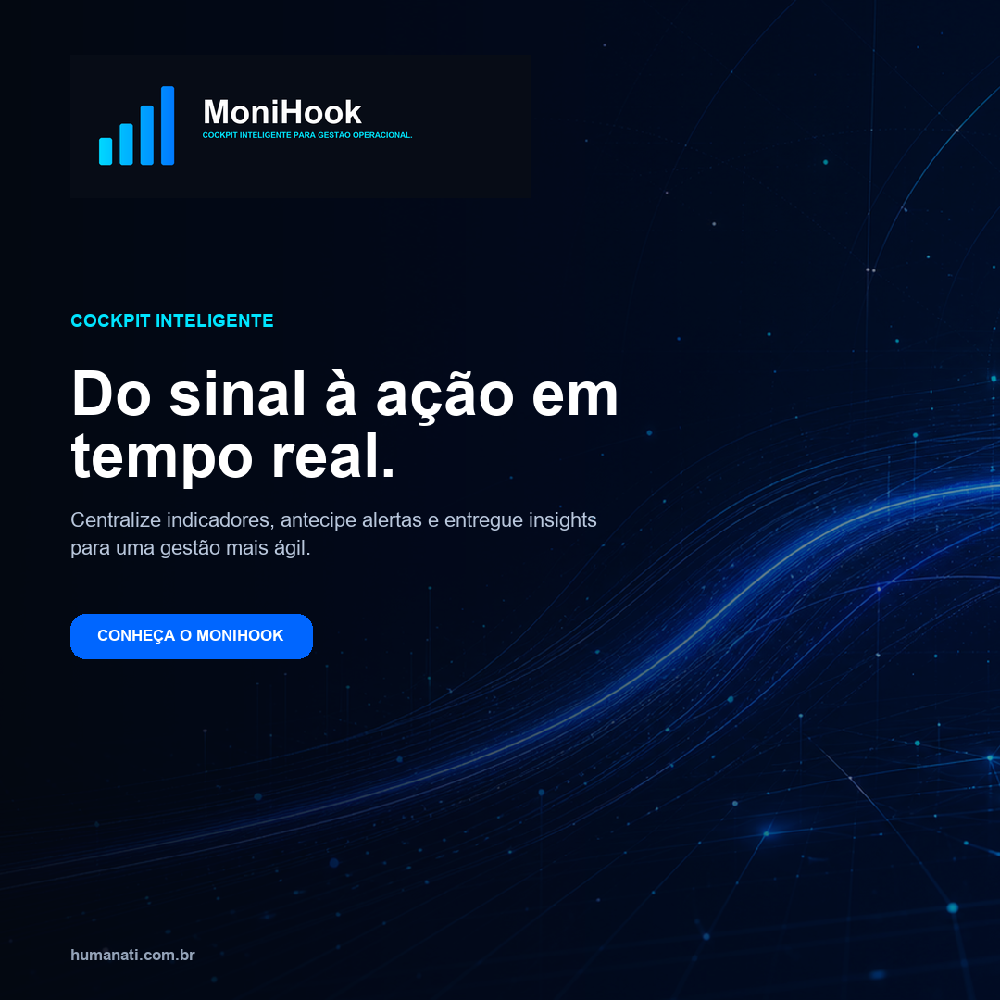
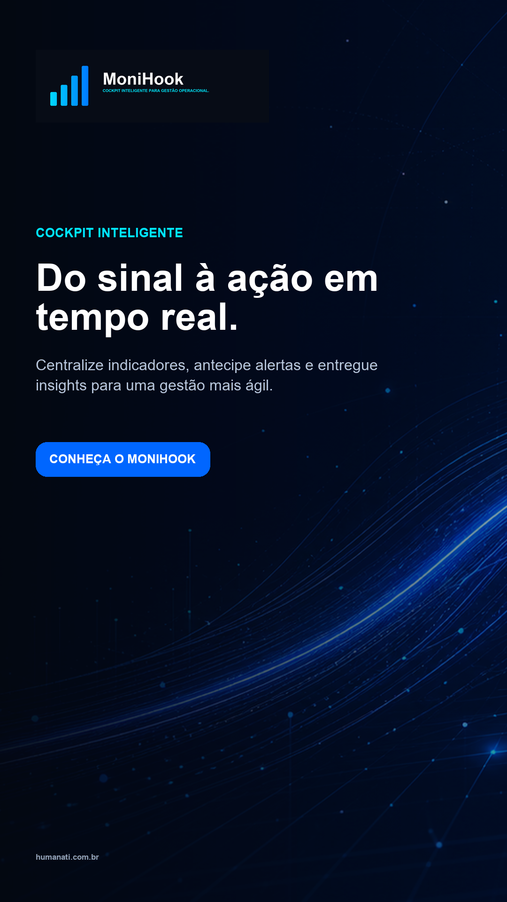

Peças exportadas.
Clique em uma peça para abrir ou baixar o arquivo em resolução final.

Feed · 1080 × 1080
Story · 1080 × 1920LinkedIn · 1200 × 627Display · 1200 × 628Clique em uma peça para abrir ou baixar o arquivo em resolução final.

Feed · 1080 × 1080
Story · 1080 × 1920LinkedIn · 1200 × 627Display · 1200 × 628